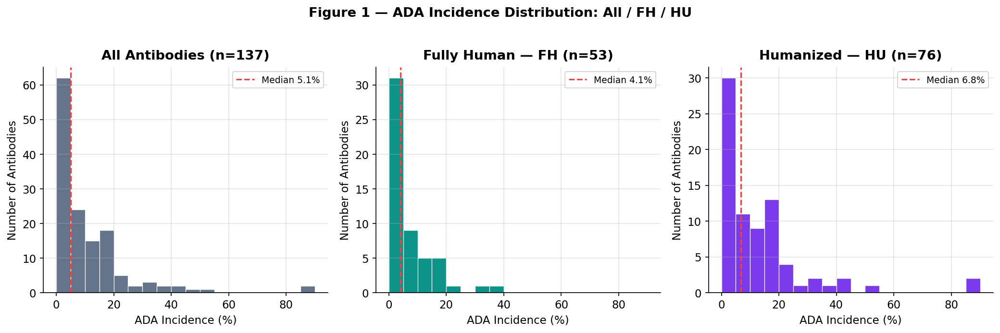
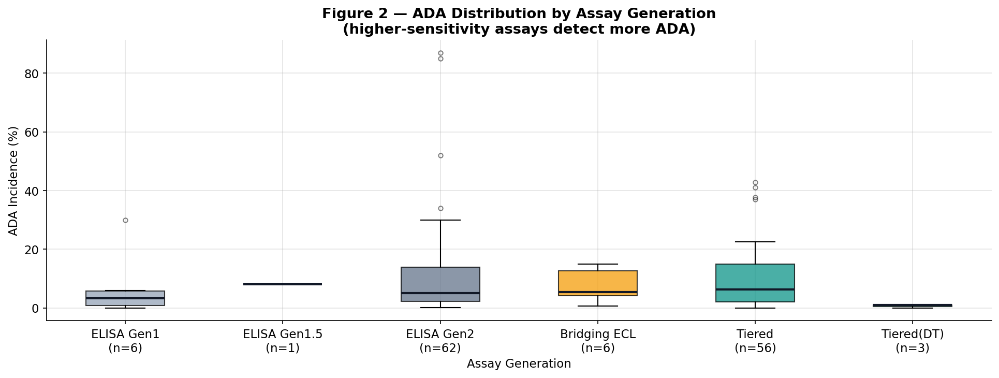
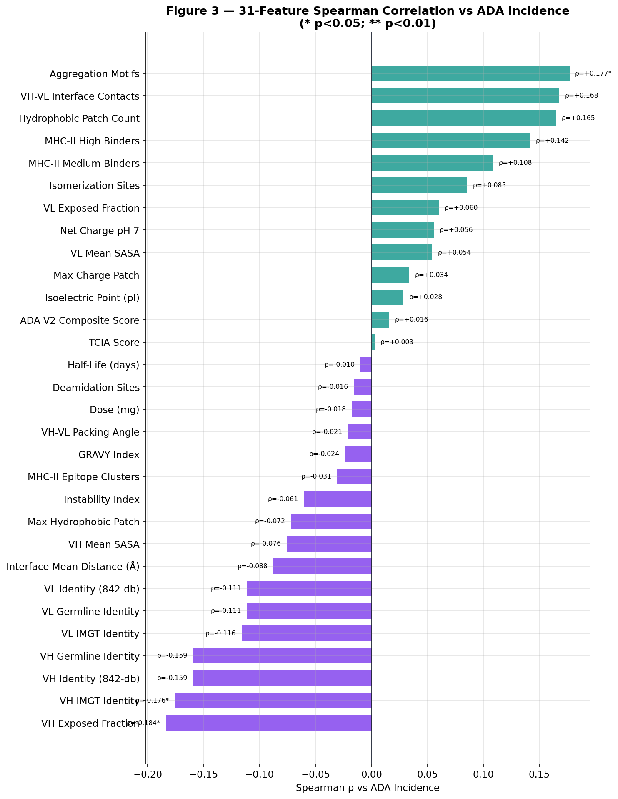
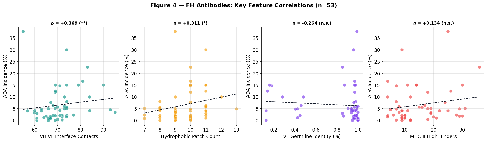
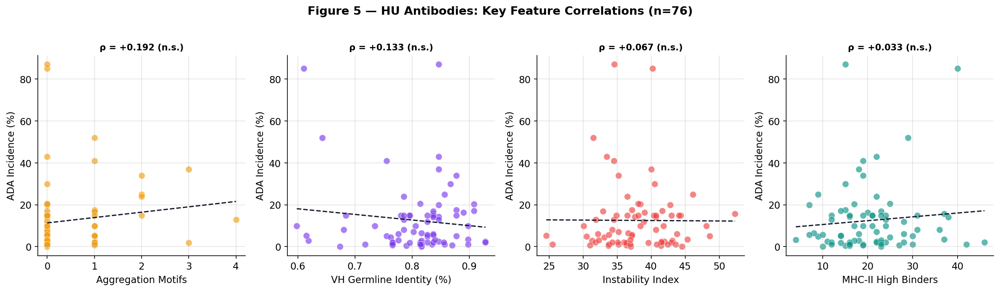
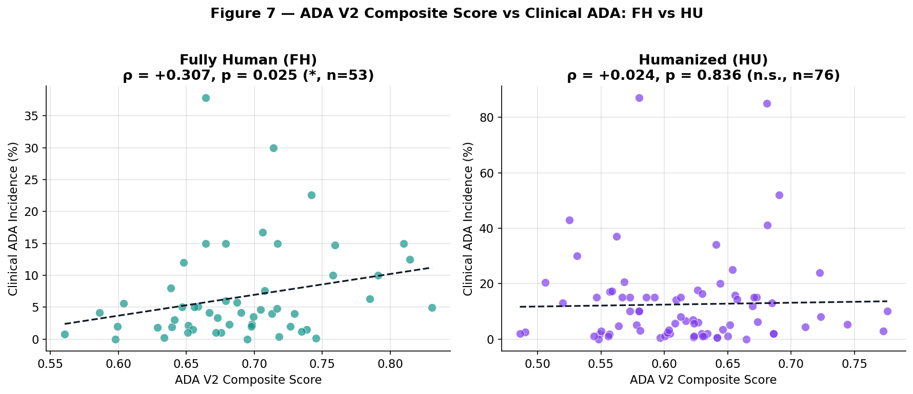
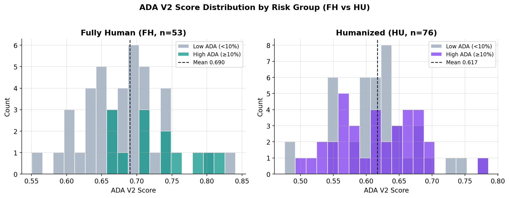
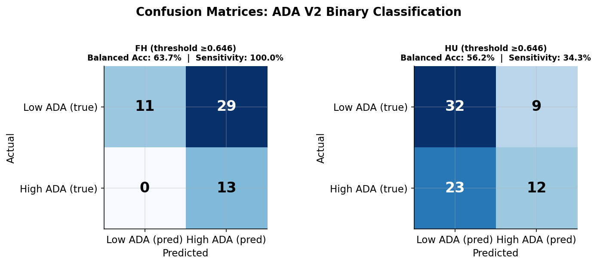
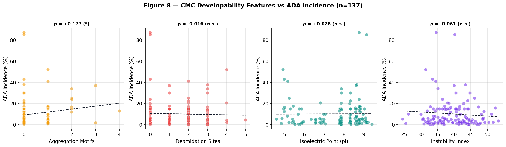

Clinically calibrated immunogenicity assessment: Our platform uses 138 real-world ADA clinical records as a reference baseline, providing richer context than purely computational scoring — helping teams identify high-risk epitopes early and develop mitigation strategies.
Supports evaluation of any therapeutic antibody sequence, including humanized candidates, VHH nanobodies, and bispecific formats. Results benchmarked against 138 clinical antibodies' historical ADA rates; typically delivered within 3–5 business days.
Immunogenicity Prediction & ADA Research
Clinically benchmarked assessment of therapeutic antibody immunogenicity against real-world ADA data.
138 ADA Records
Real-world immunogenicity data from approved and clinical-stage therapeutic antibodies, spanning multiple indications and dosing regimens.
35 HLA-DRB1 Alleles
MHC-II binding prediction via IEDB API, covering 35 HLA-DRB1 alleles to capture broader population-wide risk.
Multi-dimensional Risk Score
Sequence, structure, surface exposure, and germline distance integrated into a composite risk score, calibrated against clinical ADA rates.
Research Summary
The InSynBio immunogenicity study analyzed 138 therapeutic antibodies — including monoclonal antibodies, fusion proteins, and antibody fragments — establishing a correlation model between computational immunogenicity prediction and clinical ADA rates.
Our research reveals that immunogenicity risk in fully human (FH) and humanized (HU) antibodies is driven by fundamentally different mechanisms. We therefore established the ADA V2 Dual-Track Prediction Model, using separate evaluation parameters and weighting systems for each category.
Figure 1 — ADA Incidence Distribution: All 138 / Humanized (HU) / Fully Human (FH)

Figure 2 — ADA Distribution by Humanization Strategy, Assay Method, Dosing Route & Fc Subclass

Fully human antibodies are obtained via phage display or transgenic mouse platforms. Their CDRs evolve through somatic hypermutation (SHM), with fully human frameworks. ADA risk does not stem from foreign sequences, but from physical defects in the molecular structure itself: interface instability and exposed hydrophobic patches.
VH-VL contact count. Fewer contacts → higher dissociation risk → elevated ADA. Highly significant.
Hydrophobic patch count. Patches trigger aggregation and APC presentation — primary FH risk driver.
Inverted VL germline identity. Greater SHM divergence from human repertoire → higher ADA risk.
Strong-binding peptide count. SHM-derived epitopes trigger ADA, attenuated by background tolerance in FH.
Figure 3 — 31-Feature Spearman Correlation Panorama vs ADA Incidence

Figure 4 — FH Antibodies: Interface Contacts, Germline Deviation, Hydrophobic Patches & MHC-II Epitopes

Key Conclusion: Fully human antibody immunogenicity directly reflects molecular design quality — reducing interface anomalies, controlling SHM extent, and minimizing hydrophobic patches are the three core paths to lower ADA risk. High-sensitivity assays (Tiered/ECL) more clearly reveal T-cell epitope contributions.
Humanized antibodies graft murine CDRs onto human frameworks. ADA risk comes not only from foreign CDR peptides, but also from three engineering-specific "design traps": Vernier Zone residues, CDR-FR junction epitopes, and humanization-induced molecular instability. Clinical interventions (e.g., MTX co-administration) significantly suppress apparent ADA, making molecular-level correlation signals statistically weaker — exactly why HU assessment requires a dedicated system.
Buried murine Vernier residues (VH:27–30, 47–49, 67–71; VL:35–36, 46–49) release MHC-II anchor peptides upon degradation.
CDR/FR junctions form hybrid peptides absent from natural sequences — unique immunogenicity triggers in humanized antibodies.
Aggregation motif count (n=73, HU high-sensitivity). Vernier mishandling disrupts the hydrophobic core — primary ADA trigger.
VH/VL homology vs. 842-antibody reference database. Quantifies framework "human likeness" compliance.
Thermodynamic instability + clinical background correction (e.g., immunosuppressant use) for final risk adjustment.
Figure 5 — HU Antibodies: Aggregation Motifs, Germline Identity, Instability & TCIA Score

Key Conclusion: Clinical ADA in humanized antibodies is suppressed by immunosuppressants and other management measures, masking true molecular-level risk. The InSynBio HU-specific system bypasses this interference by directly assessing "design quality" — whether Vernier Zone and Junction peptides generate strong T-cell signals after degradation is the core dimension for evaluating HU immunogenicity risk.
ADA V2.1 Composite Score: FH vs HU Predictive Power
The ADA V2.1 composite score integrates multi-dimensional features into a single risk indicator. In the FH subset, the composite score shows a statistically significant positive correlation with clinical ADA (ρ = +0.308, p = 0.025), further improved over V2.0.
Key improvement in this weight update: based on FH deep-scan results, interface contact density (I) weight raised from 20% → 35%, surface patch (P) weight raised from 25% → 30%, and a FH-specific Midpoint correction (0.32) introduced for balanced risk stratification. In the HU subset, apparent signals are suppressed by widespread clinical immunosuppressant use (ρ ≈ 0) — exactly validating the necessity of the dual-track approach.
Figure 6 — ADA V2 Composite Score vs Clinical ADA: FH vs HU Comparison


Figure 6c — Confusion Matrix (HIGH Risk Prediction vs Clinical ADA >10%) — ALL / FH / HU

Figure 6b — ROC Curves (FH AUC=0.690 / HU AUC=0.505)
Figure 6d — Scatter: ADA V2 Composite Score vs Clinical ADA Incidence
ADA V2 Dual-Track Benchmark — 129 Comparable Clinical Records
Two readouts are reported separately here. The table below summarizes track-level correlation metrics using the benchmark endpoint definition, whereas Figure 6c fixes the cutoff at 0.646 as a HIGH-only threshold to show strict triage behavior. These are related but not identical statistics.
| Track | n | ρ (Spearman) | p-value | AUC-ROC | Balanced Acc. | Sensitivity | Specificity |
|---|---|---|---|---|---|---|---|
| All (ALL) | 129 | +0.088 | 0.319 | 0.511 | 0.505 | 0.310 | 0.701 |
| FH Fully Human ✓ | 53 | +0.308* | 0.025 | 0.690 | 0.566 | 0.727 | 0.405 |
| HU Humanized | 76 | +0.058 | 0.618 | 0.505 | 0.524 | 0.226 | 0.822 |
* Clinical ADA >10% = positive. The sensitivity/specificity values in this table come from the benchmark endpoint definition and should not be read as identical to the HIGH-only 0.646 confusion-matrix detection rates shown in Figure 6c.
FH: at a strict HIGH threshold of 0.646, detection of clinical ADA >10% is 100% (13/13); the high-ADA proportion in the low-score group is 0% (0/11); and the high-ADA proportion within the high-score group is 31.0% (13/42). This makes the FH branch useful as a conservative rule-out screen.
HU: under the same threshold, detection of clinical ADA >10% is 37.1% (13/35); the high-ADA proportion in the low-score group is 41.5% (22/53); and the high-ADA proportion within the high-score group is 56.5% (13/23). HU therefore still shows enrichment, but with stronger clinical-noise suppression.
This page does not present a public head-to-head run against EpiVax on the exact same antibody panel, assay stratification, and ADA endpoint definition, so we do not make a numeric “better than EpiVax” claim here.
What we can state more rigorously is that, under comparable conditions such as fully human antibodies, high-sensitivity ADA assays, and sequence/epitope-centered risk ranking, the FH branch of ADA V2 operates in a similar comparison frame to EpiVax-like sequence models. The difference is that ADA V2 additionally integrates SASA exposure, VH-VL interface stability, and a CMC veto, so it should be described as an expanded model rather than a strict apples-to-apples replica.
Validated LOO Models (Leave-One-Out Cross-Validation)
| Model | n | Algorithm | Key Features | LOO r | LOO p |
|---|---|---|---|---|---|
| HU-138-5f ★ | 84 | RidgeCV | supp×HL + assay_gen + supp + HL_inv + cdrh3_len | 0.247 | 0.027 |
| FH-138-GBR-4f ★ | 54 | GBR | net_burden + (1−VH_id)×burden + VH_id + assay×clusters | 0.389 | 0.004 |
Regardless of FH or HU, aggregation motifs and hydrophobic patches maintain positive correlation in the full panel (ρ = +0.177, p = 0.045), providing shared immunological risk criteria for early CMC screening. Assay method stratification (Kruskal-Wallis p = 0.852) confirms this correlation is unaffected by assay generational bias.
Figure 7 — CMC Developability Features vs ADA: Cross-format Association

Prediction Methods
The InSynBio immunogenicity assessment integrates complementary multi-layer analyses, with the final report automatically switching between FH/HU-specific weighting systems based on antibody type:
-
IEDB MHC-II Deep Scan — Covers 35 HLA-DRB1 alleles; HU-specific additionally scans Vernier Zone (~10 positions per VH/VL) and CDR-FR junctions (5 residues at each CDR end) for degradation peptides.
-
Risk Site Clustering — Identifies spatially clustered T-cell epitope hotspots, distinguishing isolated weak signals from functional strong epitope clusters.
-
Surface Exposure Assessment — Parker hydrophilicity scoring + SASA analysis (when PDB provided); FH-specific focuses on surface hydrophobic patch count.
-
Germline Tolerance Filtering — IGHV/IGKV/IGLV frequency-weighted filter identifying non-self human residues; HU-specific additionally evaluates Vernier Zone residue humanization degree.
-
ADA V2 Dual-Track Composite Score — Automatically selects the FH or HU weight matrix based on input sequence type, outputs stratified risk scores (Low / Moderate / High), benchmarked against 138 clinical records.
All scores are benchmarked against 138 clinical records in the InSynBio ADA database; the track-level benchmark shown on this page uses the 129 records with comparable endpoint completeness, providing percentile ranking and reference comparisons (e.g., Herceptin®, Humira® benchmarks).
ADA Reference Database
The InSynBio ADA database is the calibration foundation of our immunogenicity assessment, containing ADA data from clinical studies and post-marketing surveillance:
Monoclonal antibodies (IgG1/2/4), Fab fragments, fusion proteins, bispecific antibodies
Oncology, autoimmune, metabolic disease, neurological disorders
ADA incidence, neutralizing antibody ratio, dosing regimen, co-medication information
Chimeric, CDR grafted, fully humanized — all categories represented with samples
This database enables our prediction models to perform stratified calibration for specific therapeutic categories and molecular formats.
Submit Immunogenicity Assessment Inquiry
Submit your antibody sequences to receive a clinically benchmarked immunogenicity assessment report.
Contact
For inquiries, email us directly: contact@insynbio.com
We typically respond within 1–2 business days.
Methods: MHC-II epitope prediction via InSynBio computational immunogenicity pipeline. CDR/FR annotation via Chothia numbering. LOO cross-validation (RidgeCV and GBR).
Version: AbEngineCore Immunogenicity Module v2.1, April 2026. Dataset: 138 antibodies, Tier A/B evidence. See ADA Clinical Database →